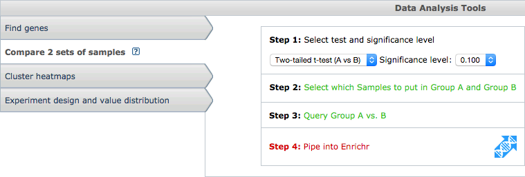

GEO2Enrichr
GEO2Enrichr
Introduction
GEO2Enrichr is a Google Chrome Extension and Python web application that helps you quickly and easily extract gene sets from the Gene Expression Omnibus (GEO) and analyze these lists for common biological functions via Enrichr.
The source code is hosted on GitHub, and the project is available under the [?] license.
The application is being developed by the Ma'ayan Lab at the Icahn School of Medicine at Mount Sinai. The work is funded by grant XXXXXXXXXX.
Installation
You can install GEO2Enrichr as an extension in your browser via the Chrome Web Store. Click the +FREE button to install the application.
The Chrome Web Store will ask you to accept GEO2Enrichr's permission settings. The application needs permission to make HTTP requests to amp.pharm.mssm.edu for processing data on the back-end and to ncbi.nlm.nih.gov for accessing GEO's API.
Tutorial
GEO2Enrichr works by embedding additional functionality into every GEO page you visit. For example, once the Chrome Extension is installed, visit the page for GDS5077 and click Compare 2 sets of samples. You should see a new button that says Pipe to Enrichr:
If you immediately click that button, you will receive a warning, "Please select 2 or more control samples." This warning occurs because GEO2Enrichr cannot function without data to download and analyze. Click Select which Samples to put in Group A and Group B and select two samples. In this example, GSM1071454 and GSM1071455 are the control samples and GSM1071457 and GSM1071457 are the treatment or condition samples:

Now you can open GEO2Enrichr. Click Pipe to Enrichr to see the application's main modal box:
GEO2Enrichr will screen scrape the webpage for relevant data. Please confirm that the accession number, platform, organism, and sample files are all correct. You can edit the first three fields by clicking on their text. You must close GEO2Enrichr and re-select the samples via GEO if your samples are incorrect.
Please fill in any metadata about the experiment, such as cell type or tissue, perturbation, and manipulated gene (if relevant). This metadata will be used in your downloadable filenames and the description sent to Enrichr.
Finally, click Get gene lists to submit your data to GEO2Enrichr for data processing. Depending on the size of SOFT file and the number of samples selected, this can take anywhere from a few seconds to a minute or two. A progress bar will keep you posted. The output will be three links to Enrichr, one for up genes, one for down, and one for both, in addition to a button to download your gene lists as .txt files.
Data processing
Given an accession number, GEO2Enrichr will analyze your data by performing the following operations:
- Download the associated SOFT file from GEO.
- Discard data with missing values or one-to-many probe-to-gene mappings.
- log2 transform the data if necessary.
- Quantile normalize the data if necessary.
- Average multiple probes to single genes.
- Identify differentially expressed genes with the selected method, defaulting to the characteristic direction.
- Write the the top and bottom differentially expressed genes into .txt files.
- Pipe the gene lists to Enrichr for further analysis.
API
If you would like to use GEO2Enrichr's back-end programmatically, you can do using the back-end's API. All requests should go to the http://amp.pharm.mssm.edu/g2e/full endpoint:
| accession | A valid accession number for GEO, e.g. accession=GDS5077. |
| platform | The associated platform for a given accession number, e.g. platform=GPL10558. |
| control | A hyphen-separated list of GSM files, e.g.control=GSM1071454-GSM1071455 |
| experimental | A hyphen-separated list of GSM files, e.g.experimental=GSM1071457-GSM1071456 |
| organism | An organism, e.g. organism=Homo+sapiens. Note that GEO2Enrichr and Enrichr currently only support human and mouse genes. |
| cell | The cell or tissue type used in the experiment, e.g. cell=RUES2. |
| perturbation | A perturbation, e.g. perturbation=depleted+TMEM88 |
| gene | If relevant, the manipulated gene. |
| Valid request | http://amp.pharm.mssm.edu/g2e/full?accession=GDS5077&platform=GPL10558&control=GSM1071454-GSM1071455&experimental=GSM1071457-GSM1071456 |